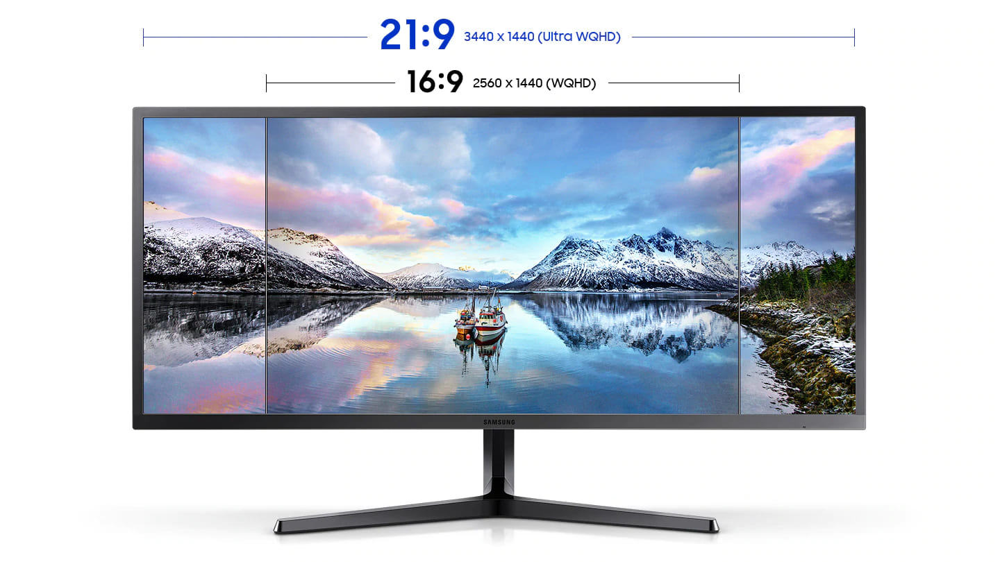
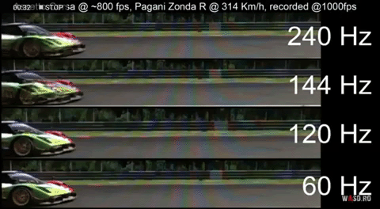
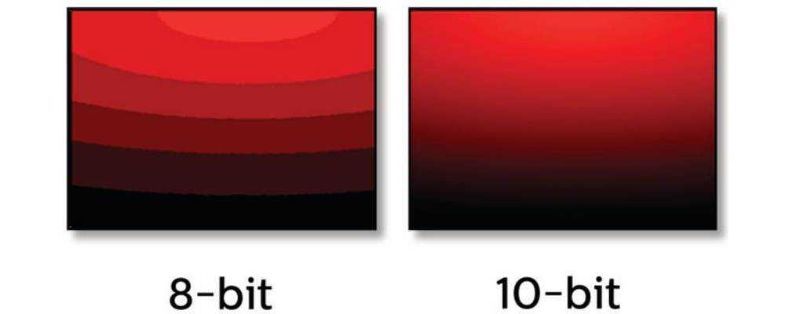

Монитор - одно из устройств, от которого зависят ваши эмоции от работы с компьютером. Сейчас на рынке можно встретить множество различных мониторов на любой вкус и цвет. Выбор монитора — это поиск компромисса между качеством картинки, скоростью работы и финансовыми возможностями. В данной статье вы узнаете на какие характеристики стоит смотреть, чтобы подобрать монитор, соответствующий вашим требованиям.
Форма и размер — первое, о чем думает пользователь при выборе монитора. Со временем устройства с соотношением сторон 5:4 и 4:3 ушли в прошлое. Также на покой отправилось любимое профессионалами 16:10. Сегодня самые популярные соотношения это 16:9 и 21:9.
Размер мониторов с соотношением 16:9 может быть следующим:
Мониторы с соотношением сторон 21 на 9 последнее время стали пользоваться большим спросом т.к. такие мониторы очень удобны для тех, кто занимается видеомонтажом, а также такие мониторы усиливают эффект погружения в фильмы или игры, но стоит учитывать, что не все игры или приложения поддерживают подобное соотношение сторон и по бокам в таких случаях будут появляться чёрные полосы. На рынке можно встретить мониторы с диагональю:
Матрица — самый важный компонент монитора. Сейчас на рынке основными типами является TN, VA, IPS.
Разрешение экрана — это количество пикселей по горизонтали, умноженное на количество пикселей по вертикали. Чем больше разрешение, тем более четким и детализированным получается изображение. Но стоит учитывать, что чем больше разрешение вашего монитора, тем меньше будет FPSа в играх и больше нагрузка на видеокарту и процессор.
Что такое частота обновления экрана? Частота обновления экрана - количество кадров, которое может отобразить устройство за одну секунду. Чем выше этот параметр, тем плавнее картинка на экране. Чем выше этот параметр, тем плавнее картинка на экране. В большинстве мониторов частота обновления составляет 65/75 Гц. Для игр лучше всего подходит частота обновления 144/240 Гц. Но в последнее время появляется всё больше мониторов с частотой обновления 360 Гц.
Но важно помнить, что если ваш компьютер, например, не может выдать 360 FPS, то вы ваш монитор не будет показывать 360 Гц.
В телевизионной сфере изогнутые матрицы потерпели фиаско, но в мониторах такое решение очень популярно, обеспечивая максимальное погружение в игры и фильмы. Чем меньше радиус кривизны, тем больше изгиб. Типовые значения — 1000R, 1500R и 1800R. Причем изогнутые мониторы на VA стоят ощутимо дешевле, чем их IPS-собратья. Но подобные мониторы не подходят тем, кто работает с чертежами и 3D-моделями.
Яркость — максимальный уровень белого, который может отобразить монитор. Измеряется в кд/м² (нит). Данный параметр отвечает за комфорт использования монитора в любое время суток.
Также существует такой показатель как статическая и динамическая контрастность. Статическая контрастность — это отношение самого белого цвета, который может отобразить монитор, к самому черному. На практике, чем выше контрастность — тем темнее черный и четче картинка. Если у IPS этот показатель едва достигает 1300:1, у VA контрастность находится в пределах от 2500:1 до 5000:1. У OLED-мониторов она стремится к бесконечности. Больше всего от низкой контрастности страдают темные сцены. А на динамическую яркость не стоит опираться, при выборе монитора т.к. показатели динамической яркости к реальным показателям контрастности не имеет никакого отношения.
Глубина цвета определяет количество оттенков, которое может отобразить устройство. Идеальным вариантом для профессионального монитора станет настоящая десятибитная матрица, способная передать более миллиарда цветов.
Цветовой охват — показатель, показывающий какую часть доступных человеческому зрению цветов воспроизводит монитор. Чем выше показатель, тем более естественно выглядят цвета на экране. В спецификациях мониторов чаще всего можно обнаружить:
Идеального монитора для гейминга не существует. Всё зависит от того, в какую игры вы играете. Например, для игры в CS:GO вам будет достаточно монитора с 24 дюйма и частотой обновления 144/160 ГЦ.
Если у вас слабый системный блок, то вам не стоит брать монитор "на вырост". Лучше эти средства вложить в железо.
Перед тем, как забрать монитор из магазина необходимо проверить его на наличие битых пикселей и засветов.